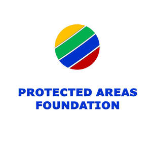

Trade Mark Journal No.2025/014 4 April 2025
UK00004177582 21 March 2025 (35,36)

- Class 35
- Advertising and promotional services; arranging promotion of charitable fundraising events; promotion of charitable fundraising events through sponsorship; promotion of goods and services through sponsorship; auctioneering services; connecting buyers and sellers of financial assets; online auctioneering services via the Internet; arranging and conducting auctions; arranging and conducting internet auctions; online auction bidding for others; carrying out auction sales; financial records management; organizing and conducting charity auctions; organising and conducting auctions for charitable fundraising; online auction services in which buyers who donate to charity receive additional bidding rights; business consultancy and advisory services; business assistance and management services; assistance in the conduct of business and commercial activities of an industrial or commercial enterprise; advertising agency services; business consultancy services relating to management of fund-raising campaigns; business consultancy services relating to the marketing of fund-raising campaigns; business consultancy services relating to the promotion of fund-raising campaigns; information, advisory and consultancy services relating to all of the aforesaid services.
- Class 36
- Fundraising; financial sponsorship; fund investment and management; fund sponsorship; international fund investment; investment of funds for charitable purposes; financial consulting services in the field of planned giving for non-profit and charitable organizations; fund raising for charity; financial grant services; fundraising services by means of organizing, arranging and conducting fundraising programs for the benefit of non-profit organizations; financial sponsorship and funding of charities; financial sponsorship of charities; organising of charitable collections; financial sponsorship of charitable fundraising events; philanthropic services concerning monetary donations; charitable fundraising services, by means of providing individuals with the information and opportunity to make monetary donations to charity; arranging charitable fundraising events and activities; providing information relating to charitable fundraising; providing funding for non-profit entities; investment of funds for charitable purposes; information, advisory and consultancy services relating to all of the aforesaid services.
EKOPOD Ekologie podniku s.r.o.
Representative: Carpmaels & Ransford LLP